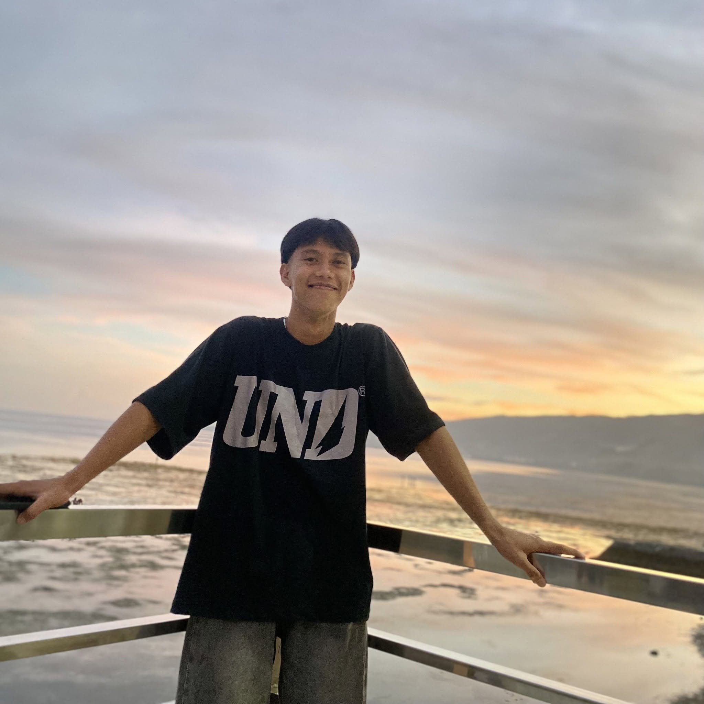
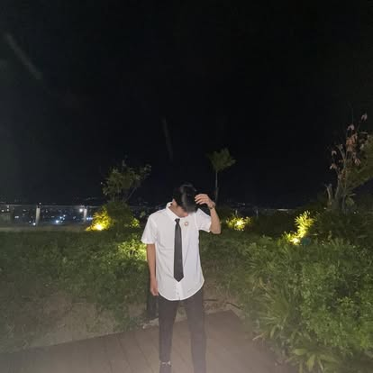
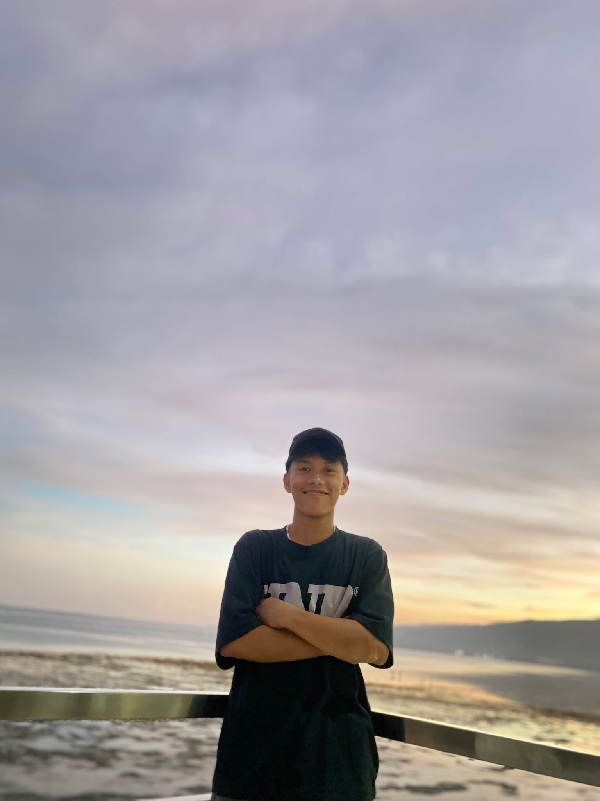
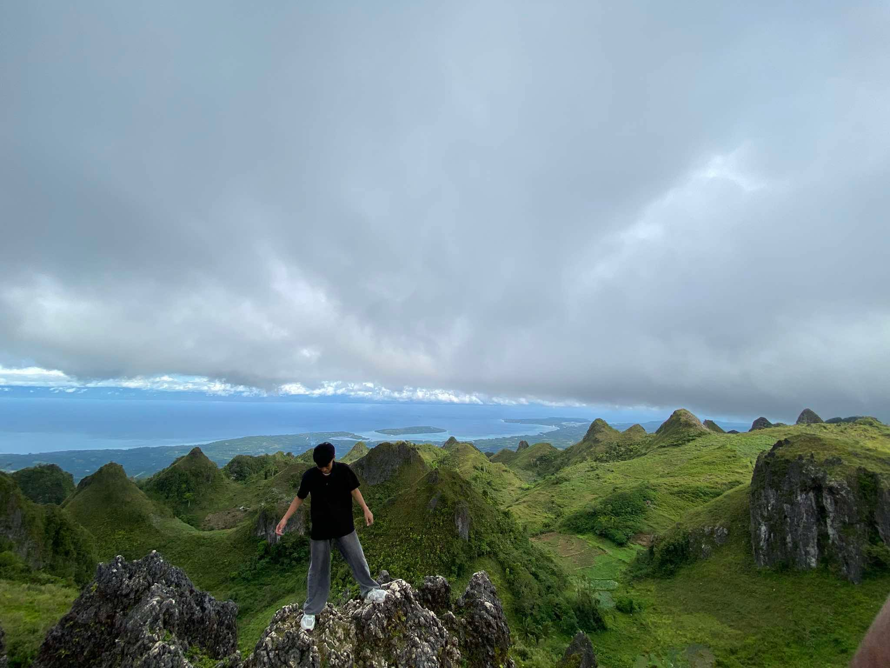
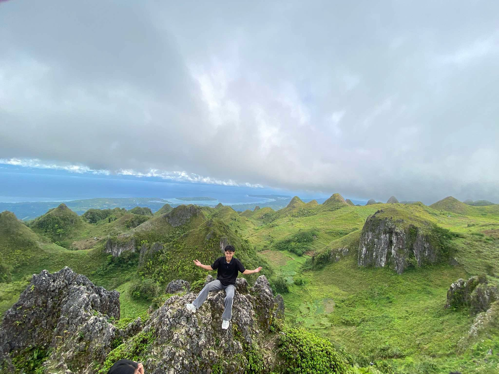

My student journey
Currently studying Information Technology and building my foundation in programming, systems, and problem-solving.
Hi, I'm Christian P. Gabisay — an Information Technology student who enjoys exploring technology, learning by doing, and turning ideas into useful digital experiences. I'm still growing, still curious, and always working on my next improvement.
BS Information Technology Student





I don't claim to know everything. I'm here to learn, improve my skills, and gain experience that will prepare me for the real world.
Currently studying Information Technology and building my foundation in programming, systems, and problem-solving.
I learn best by trying things myself, making mistakes, asking questions, and improving what I build.
To become a capable IT professional who creates useful technology and makes a positive impact.
Every step has helped shape the student and aspiring professional I am becoming.
Bachelor of Science in Information Technology
College of Computer Studies
My foundation years — learning, discovering interests, and preparing for college.
Tap to read my experience ↗These are learning areas, not claims of mastery. I'm continuously practicing and improving.
School activities and personal experiments are part of my growth. Select a card to see its details.
A space to present my journey, skills, and work.
Tap to explore ↗Practicing data handling and basic business logic.
Tap to explore ↗Learning SQL, records, and database structure.
Tap to explore ↗I'm open to learning opportunities, collaboration, and connecting with people who share an interest in technology. Thanks for taking the time to visit my portfolio.
Message